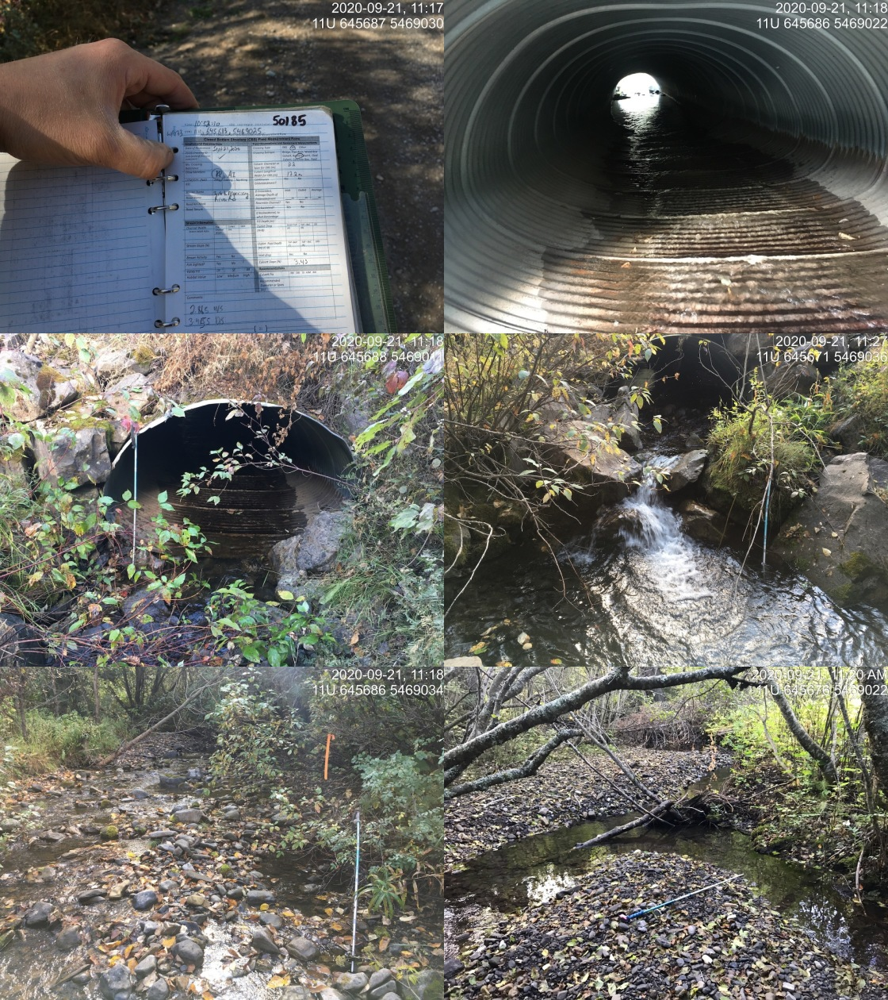

Appendix - Crossing 50185
River Rd - Tributary to Morrisey Creek
Site Location
Crossing 50185 is located on a tributary to Morrisey Creek, approximately 255m upstream from the confluence with Morrisey Creek. The crossing is located at km 14.5 on River Road just south of Morrissey approximately 15km south of Fernie. The road is accessed off of Lodgepole FSR via the Morrissey Bridge over the Elk River adjacent to Highway 3. River Road is a gravel forest tenure road (forest file id 5466 with active log hauling at the time of the survey. PSCIS crossing 50181 on an upstream tributary located approximately 2.7km upstream was also surveyed with a habitat confirmation assessment (Appendix - Crossing 50181).
Background
At the crossing location, the stream is 4th order with a watershed area upstream of the road of approximately 12km2. The elevation of the watershed ranges from a maximum of 2000 to 970m at the culvert. Upstream of the crossing, there are no anthropogenic barriers on the mainstem however PSCIS crossing 50181 (also recorded as PSCIS 103033) is documented as a barrier located on a significantly sized tributary entering the stream from the north-east approximately 2.8km upstream of River Road. A wetland type area is mapped at the top of the watershed (area NAha). No fisheries information was available for the stream (MoE 2020d) however westslope cutthroat trout, bull trout, mountain whitefish, brook trout, longnose sucker and longnose dace have been recorded downstream in Morrissey Creek (MoE 2020b). Elk River Alliance (2020b) conducted redd surveys in Morrissey Creek in 2019 with a total of 7 redds observed within a 3.6km of stream surveyed.
PSCIS stream crossing 50185 was ranked as a high priority for follow up with habitat confirmation due to the large size of the stream relative to other tributary streams in the watershed, the moderate value habitat rating by VAST Resource Solutions Inc. (2013) and because VAST Resource Solutions Inc. (2013) noted that the culvert was a good candidate for RPBio assessment. The habitat confirmation was completed on September 21, 2020. A map of the watershed including areas surveyed is provided in Attachment 1 – Map 082G.108.
Stream Characteristics at Crossing
At the time of the survey, the un-embedded and non-backwatered 2.2m diameter crossing was considered a barrier to upstream fish passage with a pipe length of 17m, a culvert slope of 3.4%, a stream width ratio of 2 and an outlet drop of 0m (Table 5.13). Water temperature was 9\(^\circ\)C, pH was 7.6 and conductivity was 378uS/cm. It appeared as though fish passage restoration works had taken place at the site historically as there were what appeared to be boulder riffle structures installed downstream of the crossing. The structures appeared to be effective at reducing the outlet drop size but had created a rock drop (0.4m) and were not resulting in backwatering of the culvert.
Stream Characteristics Downstream
The stream was surveyed downstream from the culvert for 255m to the confluence with Morrisey Creek. The mouth of the stream is located approximately 500m upstream from the confluence of Morrissey Creek and the Elk River. Overall, total cover amount was rated as moderate with small woody debris dominant. Cover was also present as large woody debris, undercut banks, deep pools, and overhanging vegetation (Table 5.14, Figure 5.13). The average channel width was 4.3m, the average wetted width was 2.7m and the average gradient was 4.2%. The dominant substrate was cobbles with gravels subdominant. There were frequent pools formed by small and large woody debris ranging from 0.3 - 0.75m in depth (average residual depth = 0.4m). Pockets of small gravels suitable for resident salmonid spawning were also present. Habitat value was rated as high with good potential for fry/juvenile salmonid rearing.
Stream Characteristics Upstream
The stream was surveyed upstream from the culvert for 740m. Overall, total cover amount was rated as moderate with small woody debris dominant. Cover was also present as large woody debris, undercut banks, deep pools, and overhanging vegetation (Table 5.14, Figure 5.14). The average channel width was 4m, the average wetted width was 2.8m and the average gradient was 6.2%. The dominant substrate was cobbles with gravels subdominant. The stream had good flows with fry observed throughout the area surveyed. Pools to 0.6m deep were present with pockets of gravel suitable for salmonid spawning throughout. Infrequent large woody debris jams to 0.5m high were also observed. Habitat value was rated as high for fry and juvenile westslope cutthrout trout rearing.
Fish Sampling
To assess potential impacts of the culvert on fish densities in the stream electrofishing was conducted upstream and downstream of the crossing. Five sites were sampled downstream and five sites were sampled upstream. A total of 37 westslope cutthrout trout and 22 eastern brook trout were captured upstream with 26 westslope cutthrout trout and 3 eastern brook trout captured downstream (Figure 5.15). Raw results are included in digital format as Attachment 2 and summarized in Tables 5.15 - 5.16 and Figure 5.12.
Structure Remediation and Cost Estimate
Structure replacement with an open bottomed structure is recommended to provide access to the habitat located upstream of PSCIS crossing 50185. The cost of the work is estimated at $125000 for a cost benefit of $36000/linear m and $77400/m2.
Conclusion
There is an estimated 4.5km of mainstem habitat upstream of crossing 50185 with habitat in the areas surveyed upstream of the crossing rated as high value for fry and juvenile salmonid rearing. Fish sampling indicated generally higher densities of fry, parr and juvenile westslope cutthrout trout downstream when compared to upstream. River Road is under tenure of the Ministry of Forests, Lands, Natural Resource Operations & Rural Development. The crossing was ranked as a moderate priority for proceeding to design for replacement with an open bottomed structure.
| Location and Stream Data |
|
Crossing Characteristics | – |
|---|---|---|---|
| Date | 2020-09-21 | Crossing Sub Type | Round Culvert |
| PSCIS ID | 50185 | Diameter (m) | 2.2 |
| External ID | NA | Length (m) | 17 |
| Crew | KP, AI | Embedded | No |
| UTM Zone | 11 | Depth Embedded (m) | NA |
| Easting | 645683 | Resemble Channel | No |
| Northing | 5469025 | Backwatered | No |
| Stream | Tributary to Morrisey Creek | Percent Backwatered | NA |
| Road | River Rd | Fill Depth (m) | 1.4 |
| Road Tenure | FLNR 5466 | Outlet Drop (m) | 0 |
| Channel Width (m) | 4.3 | Outlet Pool Depth (m) | 0 |
| Stream Slope (%) | 4.3 | Inlet Drop | No |
| Beaver Activity | No | Slope (%) | 3.4 |
| Habitat Value | High | Valley Fill | Deep Fill |
| Photos:  |
| Location | Length Surveyed (m) | Channel Width (m) | Wetted Width (m) | Pool Depth (m) | Gradient (%) | Total Cover | Habitat Value |
|---|---|---|---|---|---|---|---|
| Upstream | 740 | 4.0 | 2.8 | 0.4 | 6.2 | moderate | high |
| Downstream | 255 | 4.3 | 2.7 | 0.4 | 4.2 | moderate | high |
| Site | Location | Width (m) | Length (m) | Area (m2) | Effort (s) | Effort (s/m2) |
|---|---|---|---|---|---|---|
| 24 | Downstream | 2.70 | 40 | 108 | 361 | 3.3 |
| 25 | Downstream | 2.25 | 7 | 16 | 70 | 4.4 |
| 26 | Downstream | 2.60 | 3 | 8 | 36 | 4.5 |
| 27 | Downstream | 2.60 | 3 | 8 | 57 | 7.1 |
| 28 | Downstream | 3.10 | 7 | 22 | 170 | 7.7 |
| 29 | Upstream | 2.90 | 40 | 116 | 361 | 3.1 |
| 30 | Upstream | 2.67 | 13 | 35 | 123 | 3.5 |
| 31 | Upstream | 2.80 | 13 | 36 | 63 | 1.8 |
| 32 | Upstream | 4.47 | 18 | 80 | 223 | 2.8 |
| 48 | Upstream | 2.80 | 60 | 168 | 521 | 3.1 |
| Site | Location | Fry | Parr | Juvenile |
|---|---|---|---|---|
| 24 | Downstream | 0.9 | 2.8 |
|
| 25 | Downstream | 18.8 |
|
|
| 26 | Downstream | 12.5 | 37.5 |
|
| 27 | Downstream |
|
25 | 12.5 |
| 28 | Downstream | 50 | 4.5 |
|
| 29 | Upstream | 4.3 | 0.9 |
|
| 30 | Upstream |
|
5.7 |
|
| 31 | Upstream | 2.8 |
|
|
| 32 | Upstream | 22.5 | 2.5 |
|
| 48 | Upstream | 2.4 | 1.8 | 0.6 |
Figure 5.12: Fish densities (fish/100m2) for PSCIS crossing 50185.
Figure 5.13: Typical habitat downstream of PSCIS crossing 50185.
Figure 5.14: Typical habitat upstream of PSCIS crossing 50185.
Figure 5.15: Westslope cutthrout trout captured upstream of PSCIS crossing 50185.